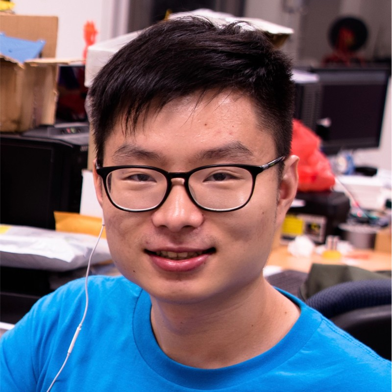

Abstract
Intelligent information gathering is a central capability for autonomous robots, enabling applications such as search and rescue, inspection, reconnaissance, environmental monitoring, and mapping. These tasks require robots to reason about where to sense next to maximize the value of collected information under limited time, energy, and communication constraints. From an algorithmic perspective, this problem lies at the intersection of active perception, exploration planning, and decision-making under uncertainty. Compared to related past workshop events, this workshop seeks to expand the scope to a broader set of information-gathering problems and introduces an accessible competition platform with minimal setup requirements. By combining technical presentations with a benchmarking challenge, the workshop aims to stimulate discussion and accelerate progress in autonomous information gathering for real-world robotic systems.
The event combines invited talks from academia and industry experts presenting recent progress, poster presentations for invited workshop paper submissions, and an open-source simulation competition focused on indoor exploration. The competition includes both single-robot and multi-robot tracks to encourage broad participation and highlight challenges in exploration performance, mission efficiency, and coordination under communication constraints. Participants will evaluate algorithms based on coverage of previously unknown environments and efficient use of mission budgets, with the winners of the challenge also presenting their approaches as part of the workshop program.
Compared to related past workshop events, this workshop seeks to expand the scope to a broader set of information-gathering problems and introduces an accessible competition platform with minimal setup requirements. By combining technical presentations with a benchmarking challenge, the workshop aims to stimulate discussion and accelerate progress in autonomous information gathering for real-world robotic systems.
Speakers
- Kostas Alexis, Norwegian University of Science and Technology, Norway
- Jen Jen Chung, The University of Queensland, Australia
- Sebastian Scherer, Carnegie Mellon University, USA
- Michael Kaess, Aquatonomy (also Carnegie Mellon University), USA
- Boyu Zhou, Southern University of Science and Technology, China
- Marija Popović, Delft University of Technology, Netherlands

Competition
Indoor exploration benchmark and challenge track.
See full details on the Competition page.
Organizers
